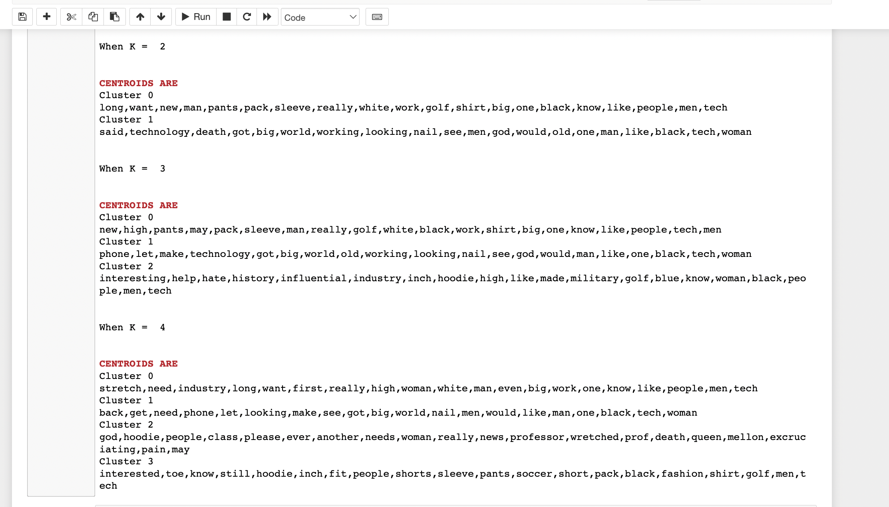
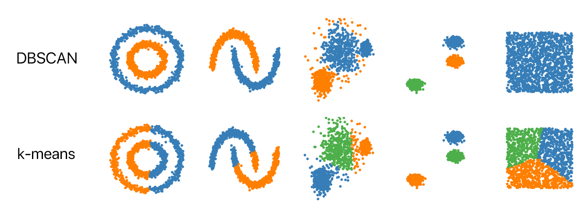
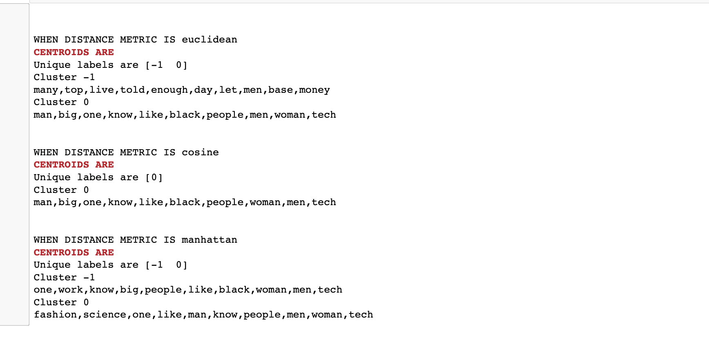
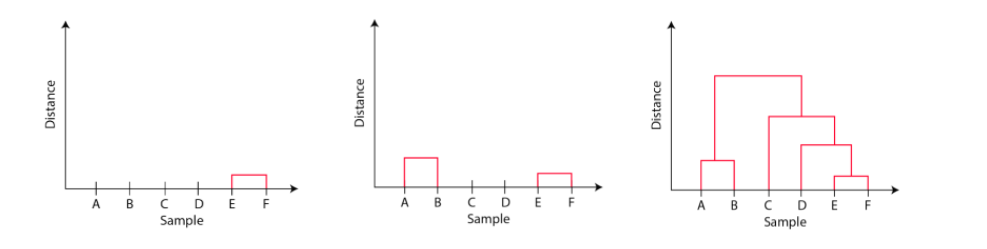

Analysis: Clustering
My idea first was to cluster popular tweets and compare the number of popular tweets based on
Woman in tech and Men and tech and see which one is talked about the most on twitter and the
link to it is here. I started with
K - means clustering and while I was working with DBSCAN a different idea striked.
Why shouldn't I 'transform text data to numerical data and cluster the vectorized data'
Well, I changed my idea and started playing around with vectorized text data.
Therefore, I will be including K-Means analysis alone for both of my ideas.
I hope this is okay!.
Now lets get into Clustering,
Aim of clustering is to segregate groups with similar traits and assign them into clusters.
Clustering is widely used to label the data by grouping them by similarity. Clustering algorithm
uses distance metrics to group the items. Basically, data points that are close to each other
goes in the same group.

Types of Distance metrics:
- Euclidean Distance
- Manhattan Distance
- Cosine Similarity
- and so on
Types of Clustering Algorithms:
- Partition based: K means Clustering
- Density based: DBSCAN
- Agglomerative: Hierarchical Clustering
Unlike ARM, for Clustering we need totally different form of data.
We will be discussing all of the above clustering algorithms in details below.
K means Clustering:
K-means clustering is a type of unsupervised learning, which is used when you have
unlabeled data (i.e., data without defined categories or groups).
The goal of this algorithm is to find groups in the data,
with the number of groups represented by the variable K.
K is the number of clusters formed from the dataset. In this analysis, I have clustered the data
by changing number of clusters from 2 to 5.
One of the primordial steps in this algorithm is centroid selection, in which k initial
centroids are estimated either randomly, calculated, or given by the user.
Here, I let the alogrithm to estimate the centroids in random.

DBSCAN:
DBSCAN is effective when it comes to arbitrary shaped clusters or detecting outliers.
DBSCAN: Density Based Spatial Clustering of Application with Noise.
Main idea ---> A point belongs to cluster if it is close to many points from the cluster.

There are two parameter of DBSCAN,
-
eps: The distance specifying the neighborhoods. Two points are
neighbors if the distance between them are less than or equal to eps.
- minpts: Minimun number of data points to define a cluster.
Based on these parameters, points are classified as core points, border points or outliers.
-
Core points: A point is a core point if there are at least minpts number of points
in their surrounding area with r = eps
-
Border points: if it is reachable from a core point and there are less than minimum number
of points in surrounding area.
- Outlier: It is not a core point and not reachable from core point.
For DBSCAN analysis, I have taken three distance metrics into account,
- Euclidean Distance
- Cosine-Similarity
- Manhattan Distance
Among all the three, Manhattan performed well with the dataset.
DBSCAN also estimates random centroids like K-means.

Hierarchical Clustering:
Hierarchical clustering involves creating clusters that have a predetermined ordering from top to bottom.
The endpoint is a set of clusters, where each cluster is distinct from each other cluster, and the objects within each cluster are broadly similar to each other.
When passed in a list that is tokenized and vectorized usig TF-IDF method, Hierarchical clustering,
clusters the documents that are of same genre.
What is TF-IDF?
Term Frequency Inverse Document Frequency (TFIDF) :
TFIDF works by proportionally increasing the number of times a word appears in the
document but is counterbalanced by the number
of documents in which it is present.
To choose the number of clusters in hierarchical clustering,
we make use of concept called dendrogram.
What is Dendrogram?
Dendrogram is a tree like diagram that shows the hierarchical relationship
between the observations.
It contains the memory of hierarchical clustering algorithms.

In the above image, A and B are in one cluster and C,D,E,F are in one cluster.
The important point to note while reading dendrogram is that:
Height of the blocks represents the distance between clusters, and
Distance between observations represents dissimilarities.
I have performed various clustering algorithms on twitter text data, find the link to my
Clustering project here